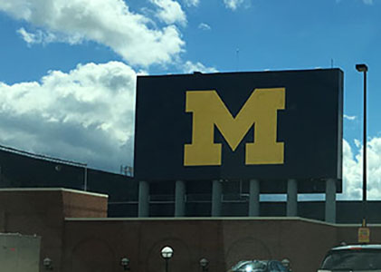
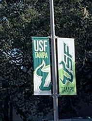
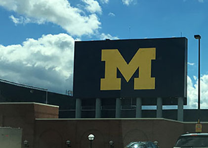
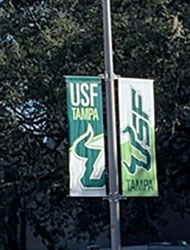

 
 
I am pursuing Graduate Certificates in Web Design and eLearning Development, and have also been accepted to the MS program in Learning Design and Technology.
In addition to USF, my education also includes a BS in Earth Science and an MS in Environmental Science, both from the University of Michigan.
Currently, I work as a middle school science teacher, in a career
spanning over 10 years in secondary education. In that time, I have gained first-hand
experience in using learning technologies to help students understand the necessary content, as well as
to keep them actively engaged. This is very important in gaining new knowledge.
My career experience also includes working in private industry as a Safety and Environmental Manager.
Much of this has involved conducting trainings, as well as designing the content for those trainings. So, I was teaching even before I entered the
education field!
Whenever I have free time, I usually spend it with my family, mostly at Busch Gardens and Disney World. We also occassionally take trips around the state. I enjoy spending time outdoors and walking nature trails, especially with my science background.